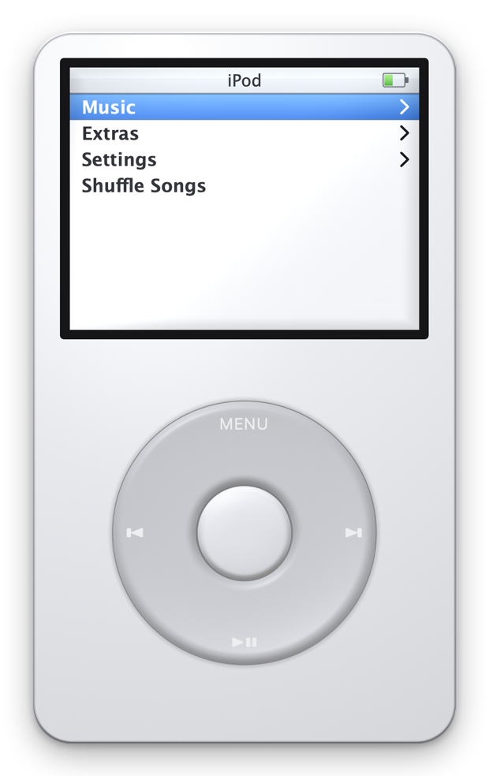
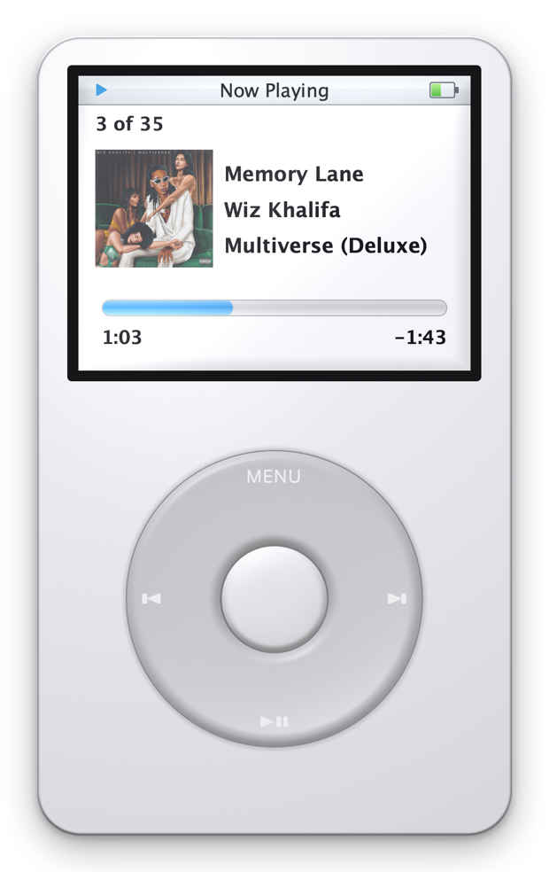
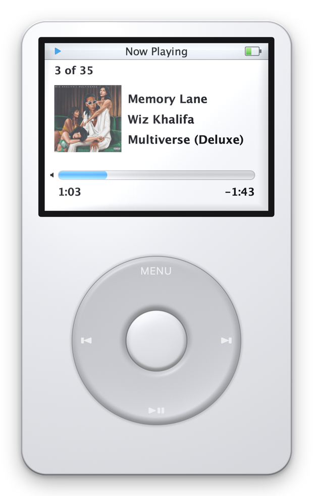
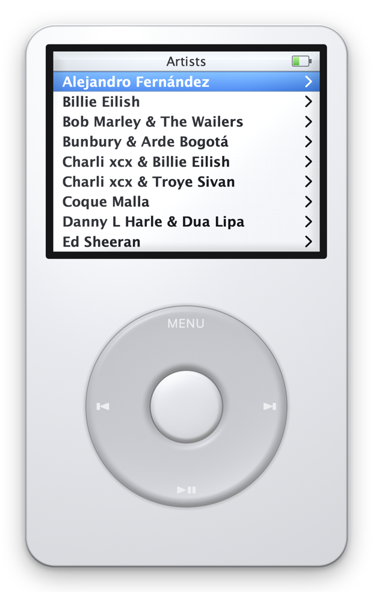
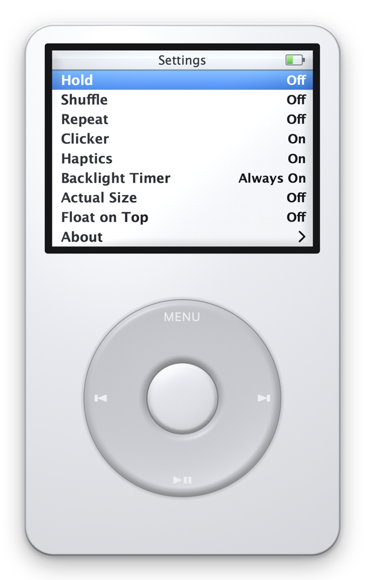

Clickwheel
A hyperrealistic 5th-generation iPod that lives on your Mac and plays your starred Apple Music songs. The wheel actually works.
View on GitHub
Drag a circle on the wheel or scroll over it · tap the edges for MENU / ⏭ / ⏯ / ⏮ · centre to select.
On Now Playing the wheel is the volume; the centre button arms the scrubber — exactly like the hardware.
↑↓ scroll ⏎ select esc back P play N/B next/back H hold
Built from millimetres, not mockups
Every dimension comes from the real device — 103.5 × 61.8 mm, a 38.2 mm wheel centred 72.8 mm down, a 2.5″ 320×240 panel — and everything on screen derives from those millimetres. That is what makes Settings › Actual Size possible: it reads your display's true physical size and renders the iPod life-sized, so it matches a real one held against the screen.
No geometry, only light
The body is a signed distance field lit in a Metal shader: the clearcoat Fresnel rim, the chrome hairline, the parting seam and the moulded well the wheel sits in all fall out of one implicit surface.
A panel, not a framebuffer
The UI draws against Apple's own 320×240 captures, then a shader applies what the LCD did to them: lifted blacks, not-quite-paper white, and the pixel grid of a 160 ppi panel on its true boundaries.
2005 firmware behaviour
The wheel sets volume on Now Playing, Select arms the diamond scrubber, Previous restarts the song after three seconds, Hold locks everything, and the backlight fades to transflective grey — not black.
It ticks back
The clicker is synthesised the way the original made it — a noise transient through a 1.6 kHz resonance, not a sample — and a Force Touch trackpad answers every detent.
Your starred songs, browsed like 2005
Playlists, Artists, Albums and Songs, all drawn from your Apple Music favourites. Music.app runs hidden as the audio engine while Clickwheel owns the queue, so shuffle, repeat and the "3 of 35" counter behave the way the iPod defined them.




Run it
macOS 14+, an Apple Music subscription, and Xcode's Metal toolchain. First launch asks permission to control Music.app.
git clone https://github.com/alexissan/clickwheel cd clickwheel ./Scripts/build_app.sh release && open build/Clickwheel.app